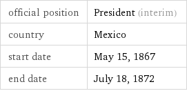
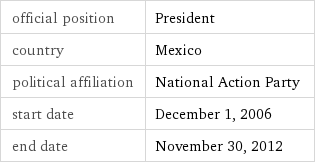
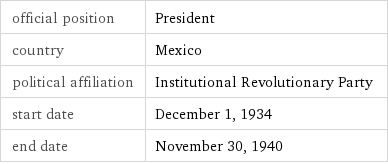
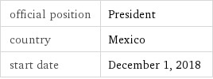
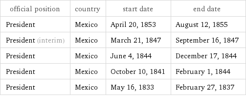
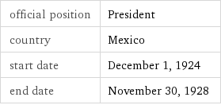

Mexico Least You Need To Know
People
Father Miguel Hidalgo
- Priest and rebellion leader
- Started the Mexican War of Independence
Benito Juarez (Lincoln of Mexico)
- Liberal party
- Known as the “Lincoln of Mexico” for similar social beliefs with Abraham Lincoln
Felipe Calderon
- Won against Andres Manuel Lopez Obrador by 1% of the votes
- The election was claimed to be fraud by many protestors
Vicente Fox
- President of Mexico, the first elected from an opposition party since 1910, and first to defeat the Institutional Revolutionary Party (PRI) in 71 years
Cuahtemoc Cardenas
- NDF party member
- Lost the presidential election in 1989 to Carlos Salinas (PRI)
- The elections were fraudulent
Lazaro Cardenas (Roosevelt of Mexico)
- Nationalized the oil industry in 1938
- Created of Pemex, the government oil company
- Redristributed land to small holders in collective holdings (ejidos)
- Economic liberalization
Porfirio Diaz

- Served 7 terms as president
- Veteran of the War of Reform and the French intervention in Mexico
- Overthrew Emperor Maximillian in a coup in 1876
- Ruled with a group of technocrats known as Cientificos for 35 years.
- His period of rule is known as the Porifiriato
Andres Manuel Lopez Obrador (AMLO)
- Current president of Mexico
- Switched from the PRI to the PRD in 1989
- Currently in the National Regeneration Movement party
- Rejected the election results of 2006 and 2012
- Caused slight factionalism in the PRD
Pancho Villa
- General who became one of the leading figures in the Mexican Revolution
- Assassinated after becoming re-involved in Mexican politics
- He is hearlded as a hero of the revolution.
Santa Anna
- Santa Anna was a major player in Mexico’s independence
- He was one of Mexico’s earliest caudillos
Emiliano Zapata
- Military leader and revolutionary who is considered a key figure in the Mexican Revolution
- Formed and led the Liberation Army of the South
- Followers became known as Zapatistas
Ernesto Zedilla
- The last president in a long 71-year line of PRI presidents
- Economic crisis during presidency
- Neoliberal policies
Comandante Marcos
- Former military leader and spokesperson of the Zapatista Army of National Liberization (EZLN) during the Chiapas conflict
Plutarco Calles
- National Revolutionary Party (PRI)
- Redistribution of land and equality
- State atheism, which led to the Cristeros Rebellion.
Luis Donaldo Colosio
- PRI candidate in the election of 1994
- Assassinated at a campaign rally in Tijuana
History
Mexico’s War of Independence
- Lead by Father Hidalgo, it lasted from 1810 to 1821
- It ended when Spain recognized Mexico’s independence
- Military rule and instability followed until the late 20th century
Mexican American War
- Lasted from 1846 - 1848
- Helped fufil the United States’ “manifest destiny” goal to expand its territory across the enitre North American continent
- The treaty of Guadalupe Hidalgo ended the war in America’s favor. The treaty gave the U.S. an additional 525,000 square miles of land
Porfiriato
- Porfirio Diaz ruled from 1876 to 1911
- Authoritarian
- Cientificos ruled with Diaz
- Economic growth from entrepreneurship and foreign investment in the U.S.
- Rich and poor gap grew
- Ended with a coup from the elite
Mexican Revolution
- The Mexican revolution lasted from 1910 to 1921 and overthrew Porfirio Diaz, ending his authoritarian rule and establishing a democracy in 1917
Cristeros Rebellion
- Lasted from 1926 - 1929
- A rebellion in response to Plutarco Calles’ secularzation and state atheism
- He sought to eliminate to power of the church
- The church fought with Cristero fighters supported by the U.S.
- Ended in a ceasefire
Establishment of PRI
- The Institutional Revolutionary Party (PRI) was founded in 1929 to legitimize the Mexican Revolution
Tlatelolco Massacre (1968)
- A student protest that resulted in the massacre of 200 people by the Mexican military.
- Using co-optation, the president who ruled after the Tlatelolco Massacre enlisted student activists in his administration
Zapatista Uprising/Chiapas Rebellion
- Poor social conditions among Amerindians led to the Chiapas Rebellion, which was led by the Zapatistas (EZLN)
- Began in 1994
- Vicente Fox made some (not very effective) efforts to include Zapatistas into the political system
- The rebellion is not formally called off
System of Government
Federal Republic
- A federal system with a republican government
Federal District of Mexico City
- Most populated city in North America
- Captital of Mexico
- Has an elected head of government and a greater political autonomy than other regions
One Party Dominant State
- A state in which one party dominates the political system. The most similar thing in Mexico is the PRI.
Caciques
- Native chiefs in Mexico
Caudillos
- Political and military strongmen from different areas of the country
Legitimacy
Revolution of 1910-1911
- Overthrew the current government and changed it drastically because there was no solution to a power transfer
- Coup by the elite
- The Porifiriato ended with Porfirio Diaz’s exile to france in 1911
- Mexico admires and honors revolutionary heroes
Constitution of 1917
- Set up a democratic government after the Mexican Revolution
- Similar to the U.S.
- Three branches
Cleavages
Urban v. Rural
- 75% urban
- PRI and caudillos controlled peasants for small favors.
Ethnic
Mestizo v Amerindian
- The Amerindian are the indigenous people of Mexico
- Mestizo are a mix of Spanish colonists and Mexican natives
- Mexico is 60% Mestizo, but the south is primarily Amerindian
Social Class
- High economic inequality
- A lot of middle class income comes from the informal economy
- Middle class and upper class citizens are more likely to vote
North vs South
- The North is more prosperous due to trade with the U.S.
- South is largely Amerindian and more isolated from Urban influence and the U.S.
Economic Policy
Dependency Theory
- Mexico’s resources flow into the US and enrich it because of the “world system”
Import Substitution
- A strategy of state led development where the state protects domestic goods and owns large industries.
- Largely implemented during Lazaro Cardenas’ rule
Maquiladoras
- Manufaturing zones in Northern Mexico that mainly produce goods for the U.S.
- First appeared in the 1960s
“Mexican Miracle”
- The rapid growth in the late 20th century of Mexico’s GNP following its transition from an authoritarian regime to a democratic regime.
- Based largely of neoliberalism, oil, and natural gas
NAFTA
- An agreement between Mexico, Canada, and the U.S. to increase free trade between the countires
Neoliberalism
- Strategy that calls for free markets, balanced budgets, privitization, free trade, and and limited government involvment in the economy.
- Practiced in the early 1980s
Parastatals
- Government organizations that are semiautonomous
- Mexico had a large parastatal newtork under PRI
PEMEX
- Large government owned oil company
Pendulum Theory
- The observation that Mexico has been swinging from socialist policies to economic liberalization
- The pendulum stopped in the early 1970s with the emergence of the technicos
PPP
- Measure of the cost of living in a country
- $17,900/yr
Haciendas
- Large estates that existed during the colonial period of Mexico
Ejidos
- Collective land grants given to peasants during Lazaro Cardenas’ rule
Latifundia
- Large estates that existed in ancient Rome and in modern day Latin America
Informal sector
- Businesses that are not registered with the government.
GINI Index
- 0.47, high inequality
HDI
- High literacy rate in men and women (~ 95 %)
- Decent life expectency (~ 76 years)
Government Institutions
President
Dedazo
- A method used by the PRI to select candidates for office
Sexenio
- Six year presidential term. Each president could only serve one term.
- Stabilized conflicts between political figures
Legislature
- Bicameral
- Direct elections
Senate
- 128 members
- 6 year terms
- 3 senators are elected from each of Mexico’s 31 states
- The remaining senators are chosen by proportional representation
Chamber of Deputies
- 500 members
- 3 year terms
- Includes 300 deputies elected from single member districts and 200 members elected by proportional representation
Judiciary
Judicial Reforms (Zedillo + Ongoing)
- Emphasis on rule of law
- Increased human rights interests
- Media exerted pressure of the judiciary to do its job
- Zedillo refused to interfere with court rulings
- Vicente Fox made dissapointing efforts to create an independent judiciary
Inquisitional vs Adversarial
- An inquisitorial system is a legal system where the court is actively involved in investigating the facts of the case
- An adversarial system is a legal system where the role of the court is an impartial referee.
Political Parties
PRI (Institutional Revolutionary Party)
- Party established to legitimize the Mexican Revolution.
- In power for 71 years straight (1920 - 2000)
- Formed as a coalition of elites
- Appeals to the less educated and rural population
Platforms
- Corporatism
- Patron-clientelism
Key Players
- Lazaro Cardenas
- Emiliano Zapata
PRD (Democratic Revolutionary Party)
- Opposition to the left of the PRI
- Appeals to younger, poltically active voters
Platforms
- Equality
- Social justice
Key Players
- Cuahtemoc Cardenas
- Lopez Obrador
- Andres Manuel
PAN (National Action Party)
- Opposition to the right of the PRI
- Represents business interests
- Strong in the North because of foreign trade n’ stuff
Platforms
- Regional Autonomy
- Less government intervention in the economy
- Clean and fair elections
- Good rapport with the Catholic Church
- Support for private and religious education
Key Players
- Felipe Calderon
- Vicene Fox
- Ernesto Zedilla
- Plutarco Calles
Elections
Electoral Reforms
- Competitve clean elections developed
Mixed electoral system
- Some congressmen are elected by proportional, some are elected by single member districs
- IFE reforms
Federal Electoral Institute (IFE)
- An idependent body that regulates free and competitve elections
Reforms
- Campaign finance restrictions
- Critical media coverage
- International watch teams
- Election monitoring
2000 Election
- Vicente Fox entered the presidency
- PAN almost had a house majority over PRI
2006 Election
- Calderon (PAN) v. Obrador (PRD)
- Calderon won by .5 % of the votes
- Obrador called for a recount, the results did not change
- Obrador claimed the election was “stolen” from him
Civil Society
Co-optation
- A process used by the Mexican government to include citizen demands in the policymaking process
- Commonly used when citizen demands get out of hand
State Corporatism
- The state listens to certain interest groups it likes
- Found in small magnitudes during Lazaro Cardenas’ rule
Patron-Client System
camarillas
- Patron-clientel systems that run through the government and independent organizations
- Causes corruption
Policy
Bracero Program
- Initiated in 1942
- Garunteed secure living conditions and a minimum wage
- Imported contract laborers from Guam
Immigration Reform and Control Act (1986)
- United states law enacted during Reagan’s presidency
- Required employers to attest to their employees’ immigration status
- Made it illegal to hire or recruit illegal immigrants knowingly
- Legalized certain seasonal agricultural undocumented immigrants, and
- legalized undocumented immigrants who entered the United States before January 1, 1982 and possessed at least a minimal knowledge about U.S. history, government, and the English language.
Immigration Policy
- Vicente Fox proposed guest worker programs and amnesty for illegal immigrants
- He proposed a more free border
- The 9/11 attacks made the U.S. hike their border security, dissolving any hopes of a free border
Drug Trafficking
- Causes corruption in Mexico’s government through camarillas
- Felipe Calderon stepped up the war on drugs
- He sent troops to dispel gangs
- The immediate reaction was a murder spike (especially on police)
- Calderon responded by sending thousands of military soldiers to patrol the streets
- Lots of violence and assassinations followed
- In 2011, the U.S. sent C.I.A. agents to a Mexican base to try and aide in the drug crisis
Other
Technicos
- Educated business oriented leaders
- Emerged after Pendulum Theory stopped and took control of the government
- Free market politics
Zapatista Army of National Liberation (EZLN)
- A military organization of Zapatistas that rose during the turmoil of the Chiapas Rebellion against the NAFTA agreement
Televisa
- Number one wireless company in Mexico, over 70 % of the population uses it
- Controls the broadcast television market